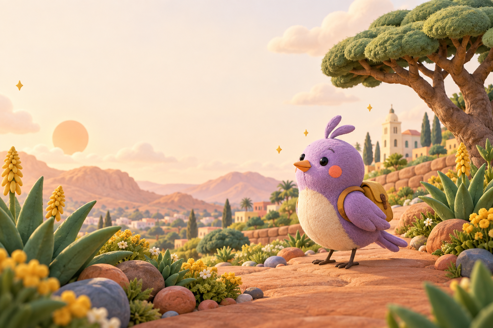

Adventure
Explore eight worlds through 32 short missions. Recognize Tigrinya words and connect them with their meanings, three at a time.
Eritrean Tigrinya · iPhone & iPad
Meet a word. Find its letters. Make it your own.
Qana gives children small reading and writing adventures to share with a grown-up. Made for ages 6–8, with adult support for children who are not reading yet.
Take a look aroundNo audio lessons. A grown-up can read along and talk about the words.

8worlds to explore
32short missions
3words at a time
Meet and revisit
92 vocabulary items.
Find your own way in
Small missions, playful practice and room to try again.
Explore eight worlds through 32 short missions. Recognize Tigrinya words and connect them with their meanings, three at a time.
Come back to familiar words and letters through games. All games are part of the free foundation.
Get to know the Fidel script. Look closely at letter shapes and practice tracing them. Every letter and tracing activity is free.
A place to see your learning grow and enjoy the steps you have taken.
A clear choice for grown-ups
The first two worlds, all letters, tracing and games are free. There is no subscription.
Qana Family
Unlock the remaining worlds and use up to six learner profiles on one device.
Configured US price: $24.99 once. Qana is still in preparation and is not released. When available, the app will show Apple’s localized price before purchase.
About purchases and restoring accessBuilt around family life
No accounts, ads, analytics or cloud AI. Learning progress stays on the device; Qana does not run a service that receives it.
Profiles, backup export and import, purchases and links out of the app sit behind a parent gate. Device backups, including iCloud Backup, may include app data according to your Apple settings.
Qana focuses on reading, recognition and writing. It has no recorded audio, listening exercises or pronunciation feedback.
Read the privacy details